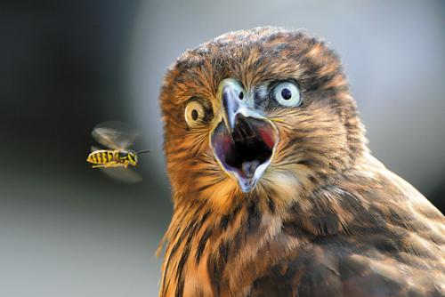

-
猫头鹰（owl）
鸮形目（Strigiformes）中的鸟被叫做猫头鹰，总数超过130余种。在除南极洲以外所 有的大洲都有分布。大部分的种为夜行性肉食性动物,食物以鼠类为主，也吃昆虫、小鸟、蜥 蜴、鱼等动物。该目鸟类头宽大，嘴短而粗壮前端成钩状，头部正面的羽毛排列成面盘. 大部分的种为夜行性肉食性动物,食物以鼠类为主，也吃昆虫、小鸟、蜥 蜴、鱼等动物。该目鸟类头宽大，嘴短而粗壮前端成钩状，头部正面的羽毛排列成面盘.
-
猴子（monkey）

猴子。杂食性。以水果为主 不放过唾手可得的肉食。是三种类人猿灵长目动物的成员，灵长 目是动物界的种群，猴子一般大脑发达，眼眶朝向前方，眶间距窄，手和脚的趾（指）分开， 大拇指灵活，多数能与其他原猴亚目和猿猴亚目。是三种类人猿灵长目动物的成员，灵长 目是动物界的种群，猴子一般大脑发达，眼眶朝向前方，眶间距窄，手和脚的趾（指）分开， 大拇指灵活，多数能与其他原猴亚目和猿猴亚目。
-
北极熊 (Polar Bear)

北极熊（拉丁学名：Ursus maritimus (Phipps, 1774)，是熊科熊属的一种动物，是世界上最大的陆地食肉动物 ，又名白熊。皮肤为黑色，由于毛发透明故外观上通常为白色，也有黄色等颜色，体型巨大，凶猛。是熊科熊属的一种动物，是世界上最大的陆地食肉动物 ，又名白熊。皮肤为黑色，由于毛发透明故外观上通常为白色，也有黄色等颜色，体型巨大，凶猛.
-
羊 (sheep)

羊是羊亚科的统称，哺乳纲、偶蹄目、牛科、羊亚科，是人类的家畜之一。有毛的四腿反刍动物， 是羊毛的主要来源。毛色主要是白色。我国主要饲养山羊和绵羊。羊是羊亚科的统称，哺乳纲、偶蹄目、牛科、羊亚科，是人类的家畜之一。有毛的四腿反刍动物， 是羊毛的主要来源。毛色主要是白色。我国主要饲养山羊和绵羊。